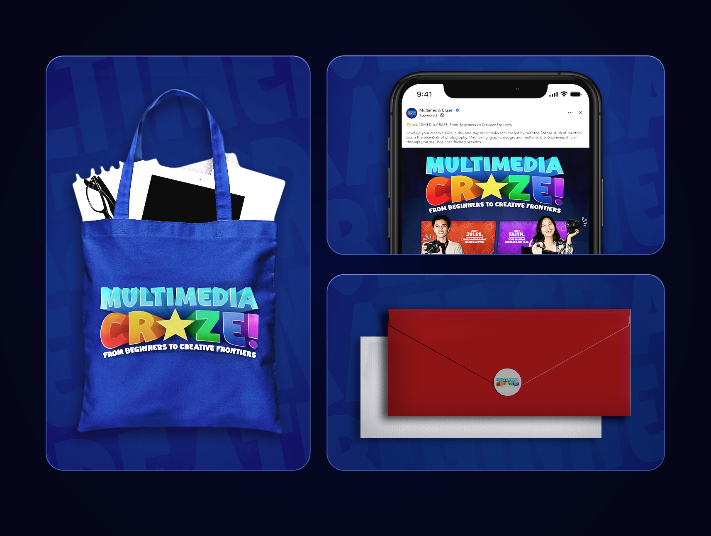
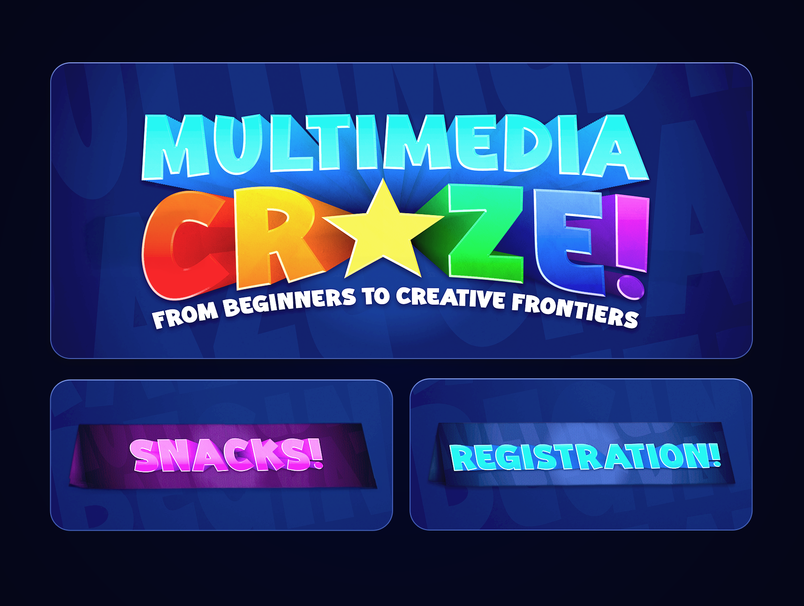
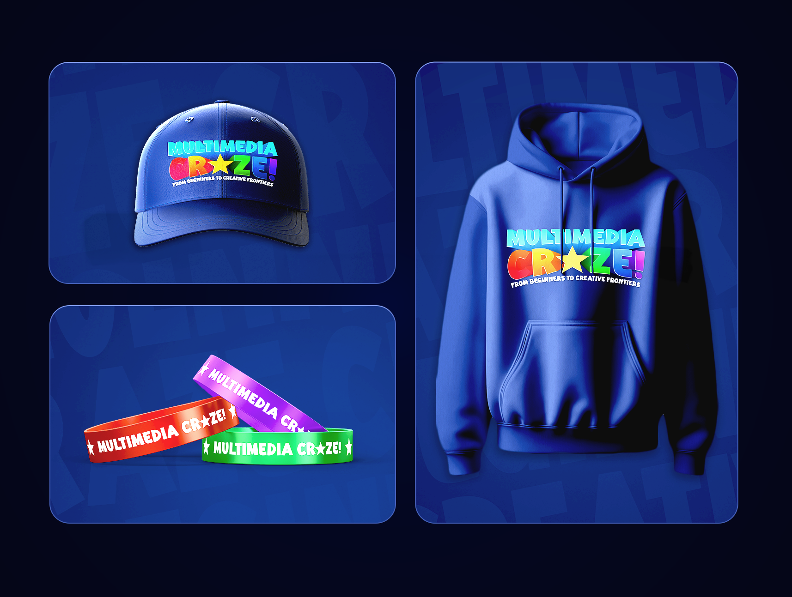
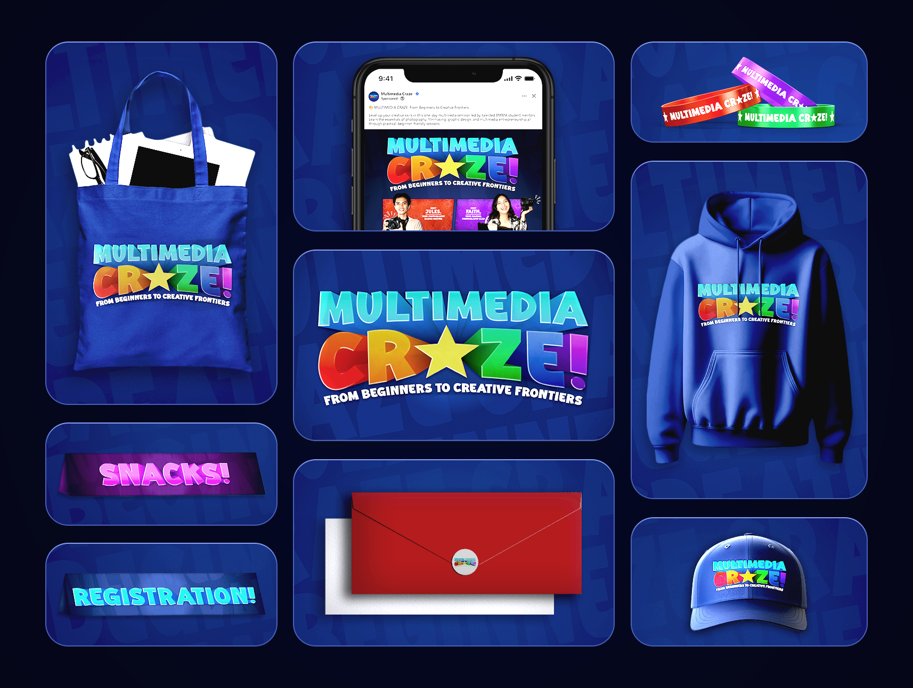

Multimedia Craze is a seminar held in 2025 that focused on the growing influence of multimedia in today’s digital and creative industries. It teaches how different media, such as graphic design, creative entrepreneurship, films, and photography, work together to communicate ideas effectively.
Branding
Marketing Collaterals
Graphic Design
Multimedia Craze Seminar: A Designer’s Perspective
The Multimedia Craze Seminar was an opportunity to visually capture energy, movement, and engagement. Every design choice, from the bold color palette to the dynamic typography, was made to reflect the intensity and creativity of multimedia arts. The challenge was translating a high-energy seminar into a cohesive visual identity that could excite the audience before they even attended, while ensuring clarity and readability across digital and print materials.



Crazy Mockups
I designed event-ready mockups that brought the theme to life across physical merchandise and signage. From caps, hoodies, and wristbands to tote bags, envelope stickers, and paper tent desk signs. The goal was to create cohesive, usable designs that not only looked visually striking but also felt practical and engaging for attendees.
Event Promotion: Posters and Program Flow
To promote the seminar, dynamic posters were created to highlight the featured speakers and details about the event. Each element, from imagery to typography, was carefully composed to draw attention and communicate the event’s excitement. Beyond the poster, a clear and visually cohesive program flow was also created, ensuring attendees could easily follow the schedule while maintaining a consistent look that matched the overall branding of the seminar.

Designing the MMA Craze Brand
The Multimedia Craze design achieved its goal of presenting the seminar as vibrant and creative. I used bold colors, playful typography, and a cohesive visual system to reflect the energy of multimedia. Applying the branding across merchandise, digital posts, and event assets showed its flexibility and consistency. Although I spent time refining details and readability, the effort paid off!


.png)
.png)